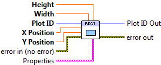
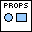

Draw Rectangle¶
Draw a rectangle, in data coordinates.
Places a rectangle on the plot, by specifying the X and Y location of the lower-left corner, along with width and height. This VI may also be used with polar plots, in which case the “rectangle” is a wedge.

 Plot ID/Plot ID Out
Plot ID/Plot ID Out- Plot identifier. Plot ID Out always contains the same value as Plot ID.
 X Position
X Position- X position of the lower-left corner of the rectangle.
- Y Data
- Y position of the lower-left corner of the rectangle.
- Width
- Rectangle width.
- Height
- Rectangle height.
-  Properties
Property cluster, available under the “Properties” subpalette.
 Color
Color- Fill color for the rectangle. Defaults to light-grey.
 Line
LineControls the appearance of the rectangle edge.
 Style
Style- Line style (solid, dashed, etc.). Default is to automatically select an appropriate style.
- Color
- Line color. May be a PlotColor or LabView color.
 Width
Width- Line width, in font points (1/72 inch).
- Display
Controls general appearance of the rectangle.
- Alpha
- Alpha blending value for this object (0.0 to 1.0). Default is 1.0 (fully opaque).
- Z Order
- Stacking order. Default is chosen based on the object type.

 Error In/Out
Error In/Out- Terminals for standard error functionality.
Axis Types¶
This VI supports both polar and rectanguar axes, as well as linear and log scales. However, use with symlog scales is not currently supported, and will result in error 402906 - Operation Not Supported for Axis Scale.
Errors¶
Other information¶
If X Position or Y Position is non-finite, no rectangle is drawn. If Width or Height is non-finite or zero, no rectangle is drawn. Negative heights and widths are permitted.